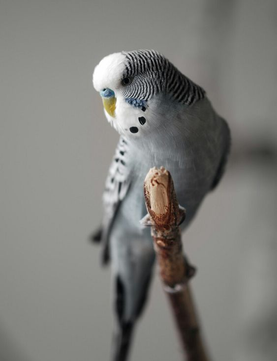
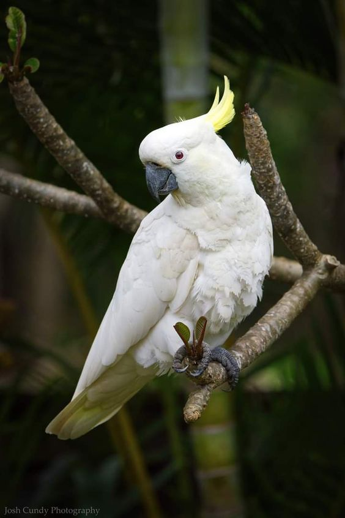
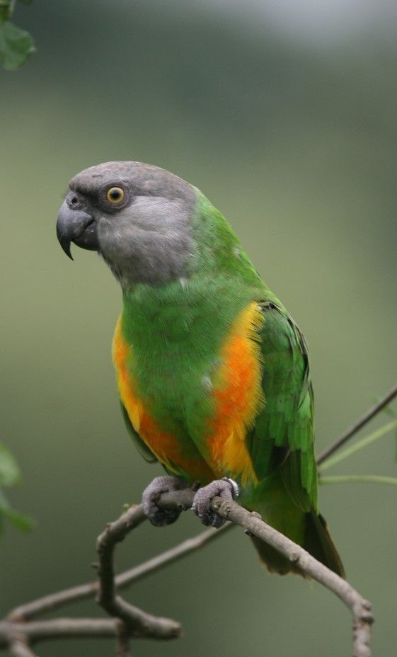
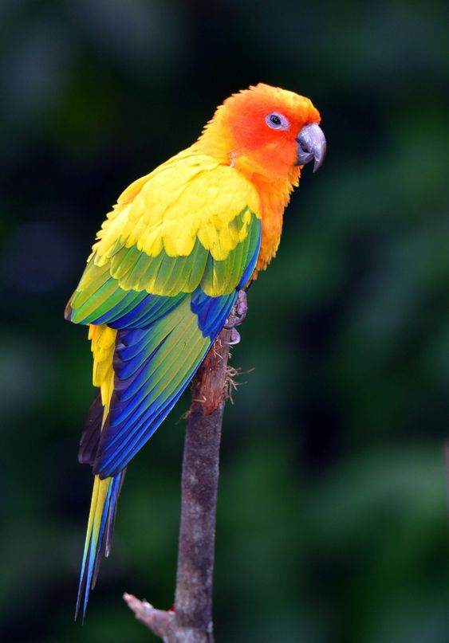
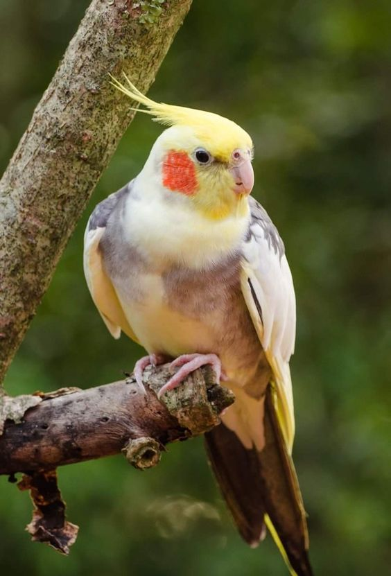
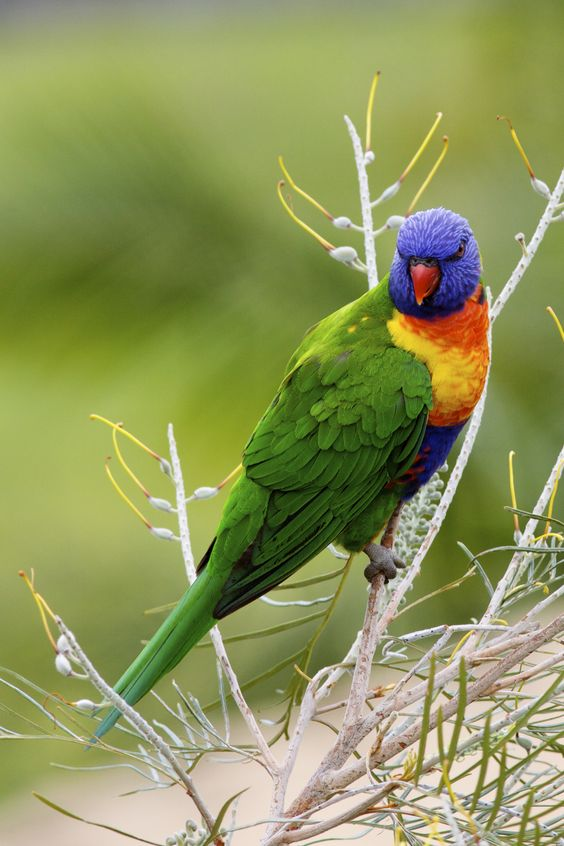
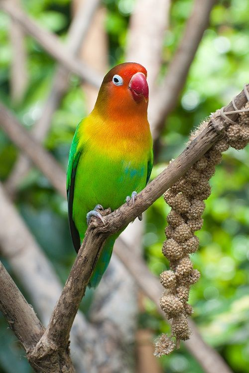
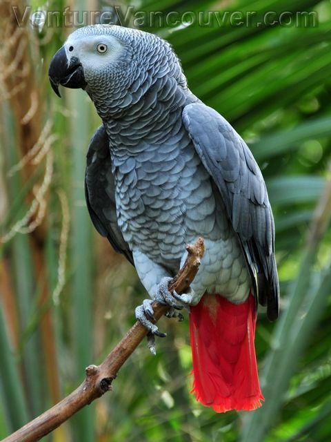
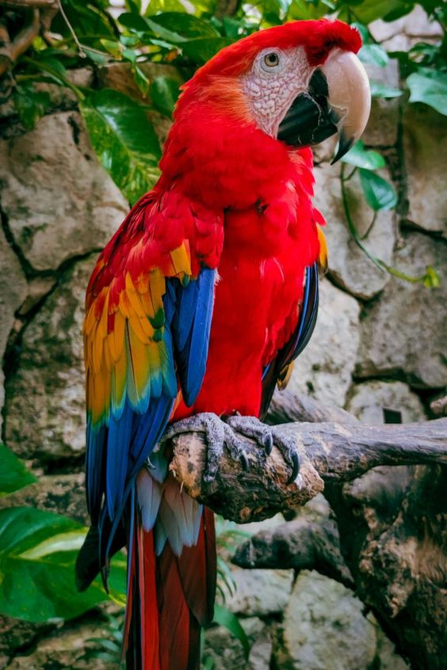
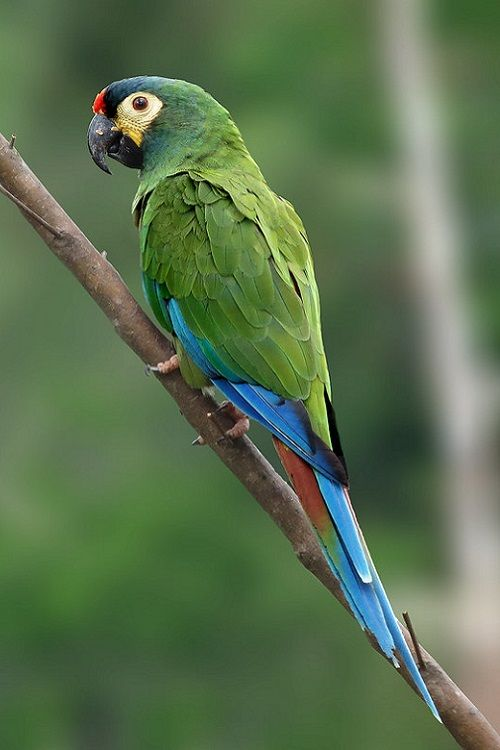

Папуги - це крила природи, розмаїття барв та дзеркало людської душі. Вони наповнюють наш світ звуками та кольорами, роблячи кожен день яскравішим і веселішим.
Харчування
Папуги відомі своєю складною психологією та високим інтелектом, що робить їх цікавими та привабливими домашніми улюбленцями. Вони здатні навчатися, вирішувати задачі, запам'ятовувати та імітувати звуки, включаючи людську мову. Папуги є дуже соціальними створіннями, які потребують постійного спілкування і взаємодії. У дикій природі вони живуть у великих зграях, тому в неволі також потребують соціальних контактів. Недостатність спілкування може призвести до стресу і поведінкових проблем.
Ці птахи відчувають широкий спектр емоцій, включаючи радість, сум, страх і злість. Вони можуть проявляти прихильність до своїх власників і навіть ревнувати до інших. Важливо враховувати їх емоційний стан для забезпечення комфортного життя. Через свій інтелект папуги потребують розумової та фізичної стимуляції. Іграшки, головоломки і тренування допомагають уникнути нудьги і деструктивної поведінки. Недостатня стимуляція може призвести до агресії, крику і самопошкодження.
Папуги формують сильні емоційні зв'язки зі своїми власниками, можуть бути дуже ласкавими і вимагати багато уваги. Зміна власника або нехтування може викликати у них стрес і тривогу. Вони використовують різні способи комунікації: вокалізацію, мову тіла та поведінкові сигнали. Розуміння цих сигналів допомагає краще взаємодіяти зі своїми птахами. Папуги добре піддаються дресируванню і можуть навчитися різним трюкам та командам, що забезпечує необхідну розумову стимуляцію і зміцнює зв'язок між птахом і власником.
Рухи папуг
Польоти: У дикій природі папуги проводять багато часу в польотах. Вони мають сильні крила і потребують регулярних польотів навіть у домашніх умовах. Польоти допомагають підтримувати фізичну форму і задовольняють природні потреби в русі.
Лазіння: Папуги використовують свої лапи і дзьоб для лазіння по гілках, іграшках та інших поверхнях. Вони є вправними альпіністами, і лазіння допомагає їм залишатися активними і здоровими.
Жонглювання та гра: Папуги люблять гратися з різними предметами, переносити їх з місця на місце, кидати і підбирати. Ця активність є важливою для їхньої розумової стимуляції і фізичної активності.
Повороти та нахили голови: Папуги часто нахиляють і повертають голову, щоб краще розглянути об'єкт або висловити цікавість. Ці рухи також можуть бути ознакою слухання або спроби зрозуміти звуки навколо них.
Розправляння крил: Папуги часто розправляють крила, щоб потягнутися, показати свої розміри або просто розслабитися. Це звична поведінка, яка допомагає підтримувати м'язовий тонус і гнучкість.
Чистка оперення: Папуги ретельно доглядають за своїм оперенням, чистячи його дзьобом. Це не лише гігієнічна поведінка, але й спосіб підтримки здоров'я пір'я та шкіри.
Житло та умови утримання для папуг
Житло та умови утримання для папуг є важливим аспектом догляду за ними. Вибір правильної клітки або вольєру відіграє важливу роль у забезпеченні комфорту та безпеки птаха. Клітка повинна бути достатньою, щоб папуга мала достатньо місця для руху та розгортання крил. Матеріал, з якого виготовлена клітка, має бути безпечним для птахів, без небезпечних чи негризучих складників. Також важливою є безпека клітки - вона повинна мати надійні замки та захисні елементи, щоб уникнути втечі папуги або травмування.
Помістіть клітку або вольєр в тихому місці, де немає прямих потоків повітря та різких змін температури. Уникайте прямого сонячного світла, оскільки воно може перегріти клітку. Забезпечте стабільну температуру та вологість в приміщенні, де знаходиться клітка, так щоб папуга почувалася комфортно. Вкладіть дно клітки сміттєзбірником або газетою для легкого прибирання та забезпечення гігієни. Додайте гілки, гніздові ящики, лізальні палиці та іграшки для стимулювання та розваг папуги. Переконайтеся, що вони безпечні та не містять шкідливих матеріалів.
Регулярне прибирання клітки або вольєру - видалення залишків їжі, випадкового сміття та зміна підстилки - допоможе забезпечити чистоту та гігієну середовища утримання для папуги. Також важливо регулярно мити та дезінфікувати посуд для їжі та води, гілки та іграшки, щоб уникнути поширення бактерій та захворювань.
Харчування
Різноманітна дієта:
Забезпечте папузі різноманітну дієту, яка включає комбінацію комерційних кормів для папуг, свіжі фрукти, овочі та зерна.
Впевніться, що комерційні корми містять всі необхідні поживні речовини та вітаміни, щоб задовольнити потреби вашої папуги.
Свіжі фрукти та овочі:
Додавайте до раціону папуг свіжі фрукти та овочі, такі як яблука, груші, морква та шпинат, щоб забезпечити різноманіття в дієті та додаткові вітаміни та мінерали.
Зерна:
Включіть в дієту папуг зерна, такі як насіння соняшнику, вівсянка та кукурудза, які містять багато енергії та жирів, необхідних для підтримки активного життя птаха.
Доступ до прісної води:
Забезпечте папузі доступ до чистої прісної води усі часи, переконавшись, що миска з водою завжди наповнена та свіжа.
Уникайте шкідливих продуктів:
Уникайте додавання шкідливих продуктів, таких як шоколад, цибуля та авокадо, до дієти папуг, оскільки вони можуть бути отруйними для них.
Регулярне контролювання раціону:
Регулярно контролюйте раціон та стан здоров'я птаха, щоб переконатися, що він отримує всі необхідні поживні речовини та вітаміни для здорового життя.
Медичний догляд
Важливо забезпечити папугам регулярні візити до ветеринарного лікаря для медичних оглядів та вакцинацій. Також важливо уважно стежити за їхнім здоров'ям, спостерігаючи за змінами поведінці чи зовнішності, такі як втрата апетиту, викиди, дихальні проблеми або зміни у кольорі пір'я і надавати медичну допомогу в разі потреби. Рекомендовано дотримуватися профілактичних заходів, таких як вакцинація та обробка від паразитів, і звертатися до ветеринара для консультацій щодо підтримання здоров'я папуги.
Різноманітна дієта:
Забезпечте папузі різноманітну дієту, яка включає комбінацію комерційних кормів для папуг, свіжі фрукти, овочі та зерна.
Свіжі фрукти та овочі:
Додавайте до раціону папуг свіжі фрукти та овочі, такі як яблука, груші, морква та шпинат, щоб забезпечити різноманіття в дієті та додаткові вітаміни та мінерали.
Зерна:
Включіть в дієту папуг зерна, такі як насіння соняшнику, вівсянка та кукурудза, які містять багато енергії та жирів, необхідних для підтримки активного життя птаха.
Доступ до прісної води:
Забезпечте папузі доступ до чистої прісної води усі часи, переконавшись, що миска з водою завжди наповнена та свіжа.
Уникайте шкідливих продуктів:
Уникайте додавання шкідливих продуктів, таких як шоколад, цибуля та авокадо, до дієти папуг, оскільки вони можуть бути отруйними для них.
Регулярне контролювання раціону:
Регулярно контролюйте раціон та стан здоров'я птаха, щоб переконатися, що він отримує всі необхідні поживні речовини та вітаміни для здорового життя.
Соціалізація та стимуляція папуг
1. Соціальна взаємодія
Папуги є дуже соціальними створіннями, які потребують регулярної взаємодії як з іншими птахами, так і з людьми. Вони формують тісні зв'язки зі своїми власниками і можуть проявляти ознаки прихильності, такі як чищення пір'я або сидіння на плечі. Для підтримки їхнього психічного здоров'я важливо проводити з папугою час щодня, спілкуватися з нею, гратися та навчати новим трюкам.
2. Розумова стимуляція
Папуги мають високий рівень інтелекту і потребують розумової стимуляції для запобігання нудьги та пов'язаних з нею проблем поведінки. Використовуйте іграшки, які стимулюють розумову діяльність, наприклад, пазли для птахів, дзеркала та інтерактивні іграшки. Зміна іграшок та їх регулярна ротація допомагають утримувати інтерес папуги та стимулюють її мислення.
3. Фізична активність
Для збереження фізичного здоров'я папугам необхідно достатньо місця для руху та фізичної активності. Забезпечте можливість для польотів, встановлюючи безпечні зони в приміщенні, де птах може вільно літати. Також можна використовувати різні типи жердинок та лазальних структур всередині клітки або вольєру для стимулювання фізичної активності.
4. Навчання та тренування
Навчання папуг новим трюкам і командам не лише забезпечує розумову стимуляцію, але й сприяє зміцненню зв'язку між птахом і власником. Почніть з простих команд, таких як «йди сюди» або «дай лапу», і поступово переходьте до складніших завдань. Використовуйте позитивне підкріплення, таке як ласощі або похвала, для заохочення бажаної поведінки.
5. Соціалізація з іншими птахами
Якщо у вас є можливість, забезпечте папузі спілкування з іншими птахами. Це може бути спільне перебування в одному просторі або короткочасні зустрічі під наглядом. Спілкування з іншими папугами може допомогти знизити стрес і підвищити загальний рівень щастя птаха.
6. Позитивне оточення
Створіть позитивне та збагачене оточення для папуги. Використовуйте різноманітні текстури, кольори та звуки, щоб створити стимулююче середовище. Музика, телевізор або спеціальні записи звуків природи можуть також допомогти забезпечити додаткову стимуляцію.
Рекомендації:
Проводьте щодня час зі своєю папугою, спілкуючись та граючи з нею.
Регулярно змінюйте іграшки та аксесуари у клітці, щоб підтримувати інтерес птаха.
Забезпечте можливість для безпечних польотів та фізичної активності.
Використовуйте позитивне підкріплення під час навчання новим трюкам та командам.
За можливості забезпечте соціалізацію з іншими птахами.
Створюйте позитивне та збагачене оточення, використовуючи різноманітні текстури, кольори та звуки.
Тренування та розвиток:
1.Навчання командам і трюкам
Папуги є дуже розумними птахами, які легко вчаться новим командам і трюкам. Почніть з простих команд, таких як «йди сюди» або «дай лапу», і використовуйте позитивне підкріплення, таке як ласощі або похвала, щоб заохотити бажану поведінку. Поступово ускладнюйте завдання, додаючи нові трюки та команди. Регулярне тренування допомагає підтримувати інтерес папуги та зміцнює ваш зв'язок.
2. Ігри та розумові завдання
Забезпечте папузі різноманітні іграшки, які стимулюють її розумову діяльність. Це можуть бути пазли для птахів, інтерактивні іграшки або просто дзеркала. Ігри, які змушують папугу думати та вирішувати проблеми, дуже корисні для її розвитку. Регулярно змінюйте іграшки, щоб підтримувати інтерес птаха.
3. Фізична активність
Для підтримки фізичного здоров'я папугам потрібно багато руху. Забезпечте їм можливість для безпечних польотів у приміщенні або на вулиці у спеціально обладнаних вольєрах. Використовуйте різні типи жердинок, лазальних конструкцій та гойдалок всередині клітки, щоб стимулювати фізичну активність.
4. Спілкування та соціалізація
Соціальна взаємодія є важливою частиною розвитку папуг. Проводьте з ними час щодня, спілкуючись, граючись та навчаючи їх новим речам. За можливості, забезпечте папугам спілкування з іншими птахами. Це допоможе знизити стрес і підвищити загальний рівень щастя.
5. Створення стимулюючого середовища
Створіть для папуги приємне та збагачене середовище. Використовуйте різноманітні текстури, кольори та звуки, щоб зробити її середовище цікавим та стимулюючим. Музика або записи звуків природи також можуть бути корисними.
Рекомендації
Проводьте регулярні тренування, починаючи з простих команд і поступово ускладнюючи завдання.
Використовуйте позитивне підкріплення для заохочення бажаної поведінки.
Забезпечте папузі різноманітні іграшки та змінюйте їх, щоб підтримувати інтерес.
Давайте папузі можливість для безпечних польотів і фізичної активності.
Проводьте з папугою час щодня, спілкуючись та граючись.
Створюйте для папуги цікаве та стимулююче середовище.
Хвороби папуг
Паразитарні захворювання (кліщі, воші) Симптоми: Постійне свербіння, випадання пір'я, почервоніння шкіри, зниження ваги. Рекомендації: Консультуйтеся з ветеринаром щодо лікування та профілактики паразитів.
Респіраторні захворювання (грип, пневмонія) Симптоми: Кашель, чхання, виділення з носа, утруднене дихання, втрата апетиту. Рекомендації: Забезпечте папузі тепло та спокій, доступ до свіжої води. Негайно зверніться до ветеринара.
Гіповітаміноз (дефіцит вітамінів) Симптоми: Втрата апетиту, загальна слабкість, лущення шкіри, поганий стан пір'я. Рекомендації: Коригуйте раціон папуги, додаючи відповідні вітаміни та мінерали. Проконсультуйтеся з ветеринаром для рекомендацій щодо харчування.
Передозування вітамінами (гіпервітаміноз) Симптоми: Діарея, блювота, втрата апетиту, загальна слабкість. Рекомендації: Припиніть надання вітамінних добавок та зверніться до ветеринара для корекції раціону.
Пошкодження крил (травми) Симптоми: Кровотеча, відкриті рани, відмова від польотів. Рекомендації: Обережно обробіть рану, забезпечте птаху спокій та тепло. Негайно зверніться до ветеринара.
Подразнення кілець на ногах (подушечки) Симптоми: Червоніння, пухлина, відмова від стояння на нозі. Рекомендації: Перевірте, чи кільця на нозі не стискають папугу. Забезпечте чистоту та уникнення агресивних речовин. Зверніться до ветеринара для лікування.
Топ 10 папуг
Хвилястий папужка
Латинська назва: Melopsittacus undulatus
Опис: Маленькі, яскраво-забарвлені папуги, популярні як домашні улюбленці.
Тривалість життя: До 5-10 років.
Вага: 30 – 40 г.
Розмах крил: До 30 см.
IQ: Помірний.
Мовні здібності: Можуть навчитися до 100 слів.
Ці маленькі папуги можуть виконувати акробатичні трюки в повітрі, такі як перевороти та петлі. Їх грайливість і винахідливість часто дивують господарів.
Какаду
Латинська назва: Cacatuidae
Опис: Легко впізнавані завдяки їх “гребеню” на голові.
Тривалість життя: До 40-60 років.
Вага: 300 – 1,200 г.
Розмах крил: До 60-80 см.
IQ: Високий.
Мовні здібності: Обмежені, в середньому до 30 слів.
Відомі своїми імпозантними гребенями на голові, які вони піднімають і опускають в залежності від настрою. Це може бути справжнє шоу емоцій!
Сенегальський папуга
Латинська назва: Poicephalus senegalus
Опис: Маленькі, зелені папуги з сірою головою та жовтими або помаранчевими відтінками.
Тривалість життя: До 20-30 років.
Вага: 120 – 170 г.
Розмах крил: До 40 см.
IQ: Середній.
Мовні здібності: До 20-30 слів.
Сенегальські папуги відомі своїм здатностям імітувати різні звуки, включаючи дзвінки телефонів і мікрохвильових печей, що часто вводить в оману їхніх господарів.
Конюра
Латинська назва: Aratinga
Опис: Яскраві та гучні папуги, відомі своїм дружелюбним характером.
Тривалість життя: До 20-30 років.
Вага: 100 – 250 г.
Розмах крил: До 40-50 см.
IQ: Середній.
Мовні здібності: Деякі види можуть навчитися до 20 слів.
Ці папуги часто виявляють “пиратську поведінку”, люблячи жувати або гризти майже все, що потрапляє їм під дзьоб. Це важливо враховувати, щоб забезпечити їх безпечними іграшками.
Корелла
Латинська назва: Nymphicus hollandicus
Опис: Менші за розміром, з відмітним гребенем на голові, відомі своїм дружелюбним характером.
Тривалість життя: До 15-20 років.
Вага: 80 – 100 г.
Розмах крил: До 30-35 см.
IQ: Помірний.
Мовні здібності: Можуть навчитися до 50 слів.
Корелли – одні з небагатьох видів папуг, які вміють свистіти. Вони часто свистять для висловлення радості та задоволення, іноді навіть намагаючись імітувати музичні мелодії.
Лорі
Латинська назва: Loriinae
Опис: Дрібні, яскраво забарвлені папуги, відомі своїми грайливими та активними натурами.
Тривалість життя: До 20-30 років.
Вага: 75 – 150 г.
Розмах крил: До 25-35 см.
IQ: Середній.
Мовні здібності: Обмежені, але деякі можуть імітувати звуки.
Лорі мають особливу дієту, яка в основному складається з нектару і плодів. Через це у них унікальний спосіб харчування і вимоги до догляду. Ці папуги мають унікальний язик з маленькими ворсинками, які допомагають їм збирати нектар і пилок з квітів, як справжній пернатий квітковий бджола.
Любовний папуга
Латинська назва: Agapornis Опис: Маленькі, соціальні, відомі своїми яскравими кольорами та прив’язаністю до партнерів. Тривалість життя: До 10-20 років. Вага: 40 – 60 г. Розмах крил: До 25 см. IQ: Середній. Мовні здібності: Обмежені, переважно імітують звуки. Любовні папуги часто утворюють міцні парні зв’язки і виявляють велику прив’язаність до своїх партнерів. Вони можуть проводити години, сидячи поруч або граючи разом.
Африканський сірий папуга – Жако
Латинська назва: Psittacus erithacus
Опис: Відомі своїм сірим пір’ям та яскраво-червоним хвостом.
Тривалість життя: До 40-60 років.
Вага: 400 – 500 г.
Розмах крил: До 50-60 см.
IQ: Дуже високий, один з найрозумніших видів папуг.
Мовні здібності: До 1000 слів.
Вони вважаються одними з найрозумніших птахів у світі. Є випадки, коли африканські сірі папуги використовували слова, щоб висловити свої потреби, а не просто повторювали вивчені слова. Жако можуть не тільки говорити, але й розуміти та використовувати слова в контексті, що робить їх одними з найінтелектуальніших видів папуг.
Ара
Латинська назва: Ara
Опис: Ара – це великі та яскраво забарвлені папуги, відомі своїми вражаючими кольорами та великими розмірами. Вони мають довгі хвости та великі дзьоби.
Тривалість життя: До 50-60 років, деякі види можуть жити навіть довше.
Вага: 0.9 – 2 кг.
Розмах крил: До 1 – 1.2 метра.
IQ: Високий, Ара є дуже інтелектуальними та навчальними птахами.
Мовні здібності: Вони можуть навчитися вимовляти багато слів та фраз, але їх мовні здібності залежать від конкретного виду та індивідуальності птаха.
Ара мають сильні та потужні дзьоби, які дозволяють їм ламати горіхи та насіння, що є основою їхнього раціону. Їхній дзьоб може виробляти силу, достатню для розламування кокосового горіха!
Квакер
Латинська назва: Myiopsitta monachus
Опис: Середнього розміру, відомі своїм яскраво-зеленим пір’ям та звучним голосом.
Тривалість життя: До 20-30 років.
Вага: 100 – 120 г.
Розмах крил: До 40-50 см.
IQ: Високий.
Мовні здібності: Можуть навчитися до 100 слів.
Квакери відомі своєю здатністю будувати складні гнізда з гілок, які вони збирають. Ці птахи можуть створювати великі, багатокімнатні конструкції, що служать не лише для гніздування, але й як засоби захисту та соціалізації. Це одна з унікальних характеристик, яка виділяє квакерів серед інших видів папуг.
Обравши папугу в якості домашнього улюбленця, ви не просто отримуєте птаха, але й вірного друга з унікальним характером і здатностями. Від маленьких, але дуже розумних буджеригарів до величних і говірких африканських сірих папуг, кожен вид має свої особливості, які роблять їх неповторними. Важливо пам’ятати, що всі папуги вимагають уваги, турботи та любові, і в замін вони наповнять ваш дім радістю, кольором та незабутніми моментами.